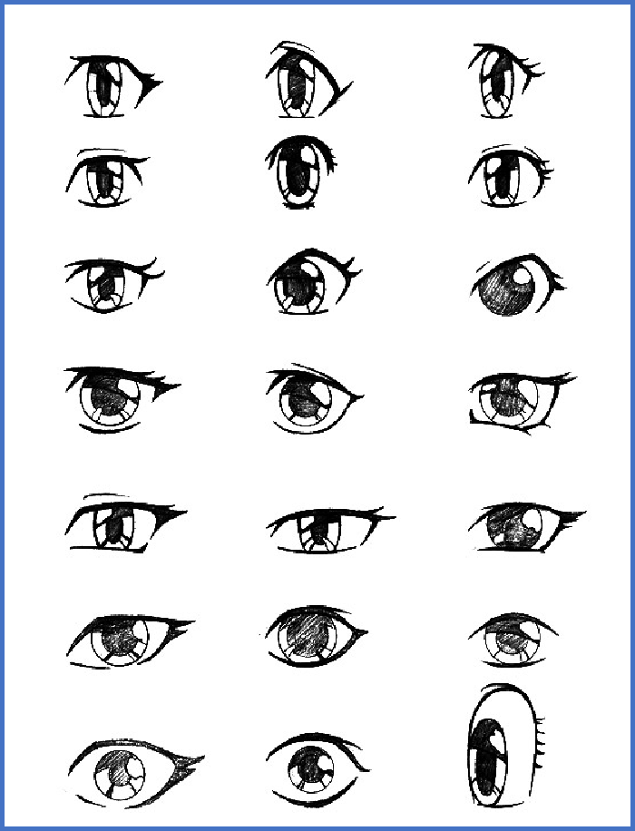
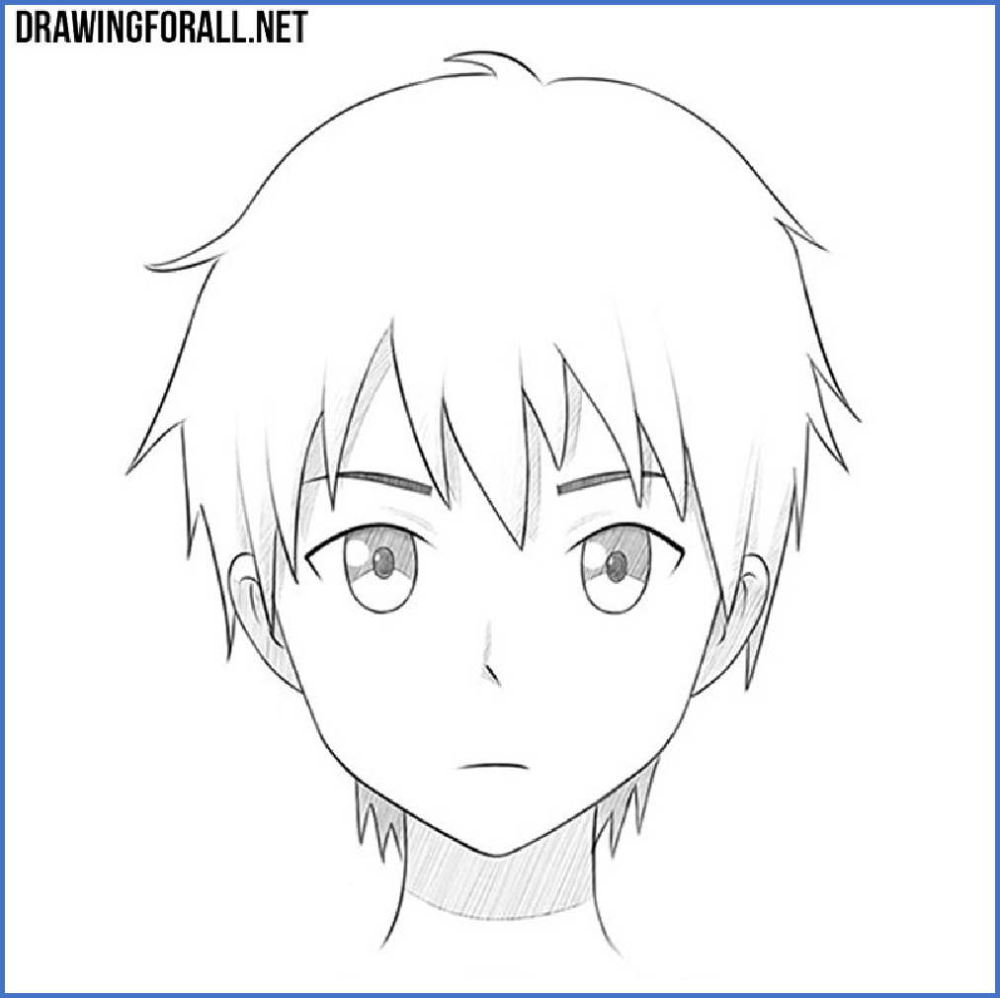
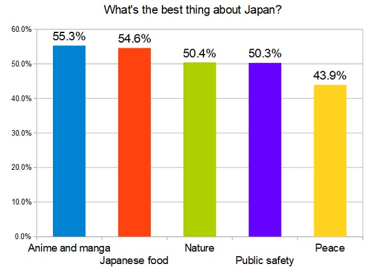
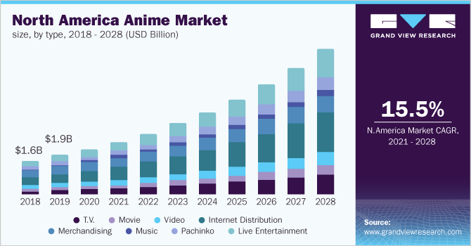

Introductions
|
Anime is a genre of animation originated from Japan, which is hand-drawn or computer-generated. What make it different from traditional animations are the unique painting style and the storytelling method.
|
Some painting techniques:

|
The same character:
|
|
The best animes are artworks of authentic aesthetics and lead to thoughtful themes and ideas. They are primarily in the form of movies and TV-series.
|
|
Movies:
|
|

|
Spirited Away
Best Animated Feature on the 75th Academy Awards
Annie Award for Best Animated Feature on the 30th Annie Awards
Best Animated Feature on the 8th Critics' Choice Awards
|

|
Your Name.
"Endearing characters and a unique story"
"Both gorgeous enough and emotionally engaging"
Favorable rate of 98% among all critics and 97% among top criticsfrom rottentomatoes
|
|
|
Violet Evergarden
"Live and be free." -Violet Evergarden
"You won't be a tool, but a person worthy of that name." -Violet Evergarden
"Words can have different interpretations. What one says isn't the whole truth." -Violet Evergarden
|
TV Series:
|
|

|
Naruto
The popular anime series that have accompanied millions of people during their adolescence
|

|
Steins;Gate
The best science fiction adventure anime series with a score of 8.8/10 on IMDb and a favorable rate of 100% on Rotten Tomatoes
"No one knows what the future holds. That's why its potential is infinite." -Steins;Gate
|

|
Fate/stay night
"A long look at concepts of heroism, justice and idealism"
|
|
Animes are becoming more popular these years, which indicates animes are worth considering.
|
|

|
|
What I would like to explore is part of the features of anime itself, by making analysis on things like tags and audience reviews.
|
What I plan to do is to explore 10 small topics on the main theme:
• What is different among people's preferences for different genres of animes?
• Is there much difference among people's taste for animes among different regions?
• Has the art technique of animes improved over the past 20 years?
• Can we find a method to identify different animes from the bullet screens?
• Is there any difference among bullet screens in different episodes of the same anime?
• Are people positively commenting on some certain animes in Twitter?
• Can we find some interesting relationship among words in Tweets on some certain animes?
• Can we judge for the sentences of a review which anime it's about?
• About the famous anime and game series Pokemon, can we judge the first class of the pokemon from their stats?
• Can we identify the anime soundtracks from the overall voice stats?